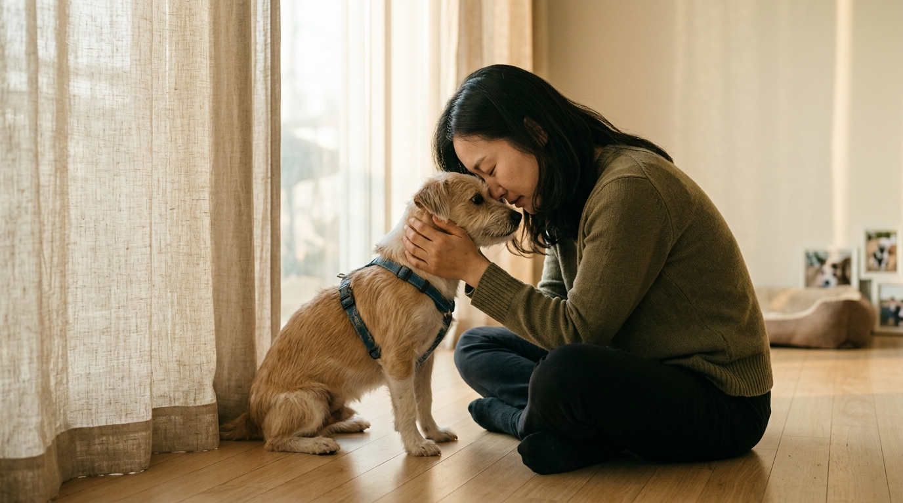
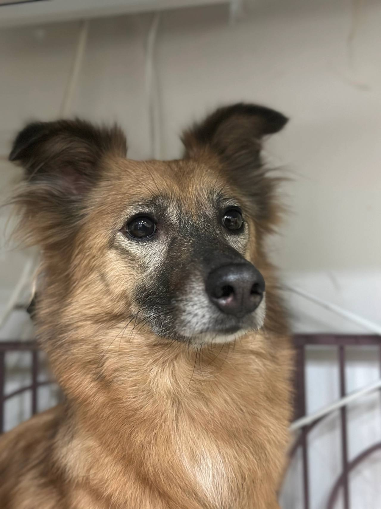
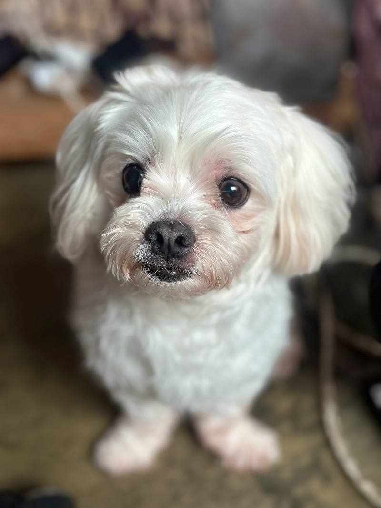

임신, 출산
출산 전후로돌보기 어렵거나아기와 함께 두기불안할 때
LOCAL GUIDE
반려동물을 가족으로 맞이하는 일은 단순한 분양이 아니라 한 생명의 전 생애를 끝까지 책임지는 숭고한 약속입니다. 순간적인 충동이나 외모에 매료되기보다는 자신의 주거 환경과 산책 시간을 냉정하게 따져보아야 합니다. 올바른 입양 문화를 위해 철저한 상담과 자격 심사를 거치는 절차가 선행됩니다.
REHOMING
개인적인 사정으로 반려견과 더 이상 함께하기 어려운 상황일 때 체계적인 절차를 거쳐 아이를 입소시키고 무료 분양으로 보금자리를 이어 줍니다. 전화 상담(0505-707-0401)을 통해 현재 상황을 파악하며 무리한 수용 대신 여건에 맞춰 신중하게 돌봄을 시작합니다.
갑작스러운 환경 변화 속에서도 아이가 평온함을 잃지 않도록 세심하게 보살피며 다음 행보를 준비합니다. 이는 책임 있는 보호 속에서 아이에게 새로운 가족을 만날 기회를 열어 주는 과정입니다.
새로운 가족을 찾아 주는 일은아이에게 건넬 수 있는마지막 선물입니다.
출산 전후로돌보기 어렵거나아기와 함께 두기불안할 때

함께 살다동물 알러지가 나타나생활이 어려워졌을 때

해외로 데려갈 수 없거나이사한 집에서함께하기 어려울 때군 입대와 오랜 부재도같은 경우에 가깝습니다.

보호자가 아프거나연로해졌을 때아이도 나이가 들어집에서 돌보기 어려울 때
상담부터 입양 공고까지, 순서는 같습니다.

유선 상담을 통해 나이, 지역, 질병 유무와 특이 상황을 확인합니다. 센터 내부 공간을 종합적으로 살펴본 뒤 1차 입소 가능 여부를 결정합니다.

직접 센터로 방문하시거나 이동 지원 일정을 조율하여 선택합니다. 전국 어디든 전담 인력이 무상으로 픽업하여 이동을 돕습니다.

제반 확인 사항과 규정된 비용 조항을 면밀하게 검토합니다. 안내 내용을 충분히 숙지한 후 정식 입소 동의서를 작성합니다.

건강 상태와 함께 대형견, 소형견, 노령견 여부를 다각도로 살핍니다. 확인된 상태에 맞춰 아이가 안전하게 머물 전용 공간을 정합니다.

안정적인 생활 속에서 아이의 사진과 영상을 정성껏 촬영합니다. 새로운 인연을 맞이할 수 있도록 사전 자료를 차분히 정리합니다.

공식적인 입양 공고를 등록하여 아이의 다음 여정을 이끕니다. 적합한 보금자리를 찾아 새로운 가족과 따뜻하게 연결됩니다.
개별 일과와 성향 점검을 거쳐 생활 적응을 준비하고 있는 강아지 현황입니다.
양육 환경과 반려견의 성향이 부합하는지 점검하는 순서입니다.
주거 형태, 가족 구성원의 동의 여부, 돌봄 시간 등을 유선 상담을 통해 점검합니다.
보호소에 방문하여 개체의 건강 이력과 행동 특성을 확인하고 직접 대면 시간을 가집니다.
지속 양육에 관한 세부 항목을 확인하고 확인 서류를 작성한 뒤 가정을 이룹니다.
산책하고, 밥 먹고, 미용하는 보호소의 하루입니다. 사진을 누르면 그 이야기를 볼 수 있어요.
안내
성남 주민들 사이에서도 일회성 거래가 아닌 정식 상담과 심사를 거치는 올바른 입양 인식이 확산 중입니다.
0505-464-1004로 생활 이야기를 먼저 나눕니다. 어떤 고양이을 찾는지, 돌볼 시간은 어떤지 듣고 만날 수 있는 아이를 고릅니다. 성남고양이무료분양 비용을 이 페이지에서 정하지는 않습니다.
또 다른 입양 희망자는 대면 미팅 당일, 입양을 염두에 두었던 소형 고양이 친구의 오른쪽 뒷다리 걸음걸이가 다소 부자연스러운 점을 발견했습니다. 담당 관리자는 숨김없이 해당 아이가 슬개골 탈구 1기 상태이며, 미끄럼 방지 매트 시공과 체중 관리가 필수적이라는 사실을 의무 기록과 함께 고지했습니다.
신청자는 솔직한 정보 공개에 깊은 신뢰를 느꼈고, 입양을 포기하는 대신 집안 전체에 논슬립 매트를 완비한 후 아이를 맞이하기로 결심했습니다. 성남 중심에서 투명한 성남고양이무료분양 상담을 거친 덕분에, 보호자는 향후 발생할 수 있는 관절 질환에 대해 사전에 마음의 준비와 경제적 대비를 마칠 수 있었습니다.
단점을 감추지 않고 투명하게 공유하는 정직한 절차만이 보호자와 반려동물 간의 단단한 신뢰를 형성하는 초석이 됩니다.
입양 후 가장 안타까운 파양 원인 중 하나는 동거 가족 중 한 사람에게서 뒤늦게 발생하는 급성 천식이나 비염, 두드러기 반응입니다. 입양을 진행하기 전 반드시 가족 구성원 전원이 의료 기관을 방문하여 정밀 알레르기 수치 검사를 받아보시는 것을 강력히 권장합니다.
또한 주거지가 아파트나 다세대 빌라인 경우 반려견 사육이 관리 규약상 허용되어 있는지, 짖음 소음으로 인한 이웃 분쟁 소지가 없는지 확인해야 합니다. 성남 도심에서 성남고양이무료분양 고민을 해결하고자 하실 때는 주거 공간의 방음과 산책로 인접 여부까지 면밀히 고려하는 지혜가 필요합니다.
한 사람이라도 반대하는 가족이 있다면 아이가 가정 내에서 온전한 사랑을 받기 어려우므로 전원의 합의가 도출될 때까지 일정을 조율해야 합니다.
입양을 준비하는 과정에서 궁금한 점이 생기거나, 혹은 감당하기 힘든 사정으로 입소를 고민하게 될 때는 반드시 공인된 전용 창구를 찾아야 합니다. 불법 브로커나 음성적인 거래에 휘둘리지 않고 아이의 안전을 최우선으로 지켜낼 수 있는 방법입니다.
입양과 관련된 전반적인 안내는 0505-464-1004를 통해 진행되며, 피치 못할 사정으로 인한 파양 및 입소 문의는 0505-707-0401을 통해 체계적으로 상담받으실 수 있습니다. 성남 어디서나 성남고양이무료분양 고민이 발생했을 때 신속하게 올바른 번호로 접수하여 아이의 미래를 지켜주시기 바랍니다.
생명을 지키는 모든 상담은 열려 있으며 투명하고 공정한 절차를 통해 최선의 해법을 모색해 드립니다.
새로운 가족을 맞이하는 일은 단순한 호기심이나 일시적인 감정으로 시작되어서는 안 되며, 한 생명의 평생을 함께하겠다는 무거운 책임감이 동반되어야 합니다. 성남에서 신중하게 성남고양이무료분양 경로를 살피고 계신다면, 겉으로 보이는 외모나 어린 나이만을 우선하기보다 생활 반경과 주거 여건을 차분히 돌아보는 과정이 먼저 이루어져야 합니다.
많은 분들이 일상에서 큰 위로를 얻고자 어린 고양이 입양을 희망하시지만, 실제 양육 과정에서는 배변 교육부터 건강 관리, 규칙적인 산책까지 많은 시간과 정성이 요구됩니다. 보호소의 손길을 거쳐 따스한 보금자리를 기다리는 아이들은 저마다 고유한 성향과 과거의 기억을 지니고 있기에, 보호자의 배려와 인내심이 기본적으로 준비되어 있어야 원활한 유대가 형성됩니다.
입양 상담은 단순히 절차를 밟는 것에 그치지 않고, 반려인과 반려동물이 서로의 일상에 무리 없이 녹아들 수 있는지 면밀히 가늠해보는 필수적인 소통 창구입니다.
첫 단계는 전용 번호인 0505-464-1004를 통해 진행되는 심층 유선 상담으로, 입양 희망자의 거주 환경과 가족 구성을 객관적으로 파악합니다. 보호자가 희망하는 반려견의 성별, 연령, 활동 성향을 청취한 후 현재 보호소 내에서 가장 적합한 아이를 선별 매칭하는 작업입니다.
유선 상담에서는 과거 반려동물 양육 경험 유무, 세대원 전원의 찬성 여부, 하루 중 집을 비우는 공백 시간 등을 가감 없이 여쭙게 됩니다. 성남 일대에서 성남고양이무료분양 신청을 준비하시는 경우, 거주지의 지리적 특성과 산책 인프라에 대한 의견도 함께 교환하여 매칭의 정확도를 높입니다.
상담 과정에서 양육 여건이 부적합하다고 판단될 경우 입양 진행이 정중히 반려될 수 있으며 이는 아이의 복지를 위한 조치입니다.
초등학생 자녀를 둔 한 가정은 아이의 간절한 소망에 따라 입양 절차를 진행하던 중, 시설 측의 권고로 가족 전원 알레르기 정밀 검사를 진행했습니다. 평소 아무런 증상이 없다고 자신하던 아버지가 동물 비듬에 대한 강한 양성 반응을 보이며 예상치 못한 난관에 부딪혔습니다.
가족들은 실망하기보다 현장 대면 방문을 여러 차례 진행하며 아버지가 아이와 직접 접촉했을 때의 호흡기 증상 발현 여부를 단계적으로 테스트했습니다. 성남 환경에서 진지하게 성남고양이무료분양 길을 걷고자 했던 이들은 결국 항히스타민제 복용 여부와 공기청정기 배치 등 완벽한 대비책을 세운 뒤에야 안전하게 아이를 품에 안을 수 있었습니다.
사전 접촉 테스트를 소홀히 했다면 입양 며칠 만에 고통스러운 이별을 마주했을 아찔한 상황을 철저한 준비로 극복한 사례입니다.
자신의 출퇴근 시간, 주말 활동 방식, 체력 수준을 객관적으로 분석하지 않은 채 무작정 체급이나 견종을 고르는 것은 매우 위험합니다. 왕성한 에너지를 분출해야 하는 중대형 고양이 개체의 경우 하루 최소 1~2시간 이상의 고강도 야외 산책이 필수적입니다.
반면 직장 생활로 집을 비우는 시간이 다소 긴 편이라면, 넘치는 에너지의 어린 자견보다는 성향이 이미 온화하게 정착된 성견을 맞이하는 편이 서로에게 훨씬 유익합니다. 성남 일상 속에서 편안한 성남고양이무료분양 결실을 맺기 위해서는 내 일과의 빈틈에 무리 없이 들어올 수 있는 체급과 활동량을 상담원과 조율해야 합니다.
유선 상담(0505-464-1004) 시 본인의 하루 평균 산책 가능 시간과 거주 평수를 정확히 밝혀주시면 가장 최적화된 친구를 추천해 드립니다.
입양 당일부터 2주 동안은 아이가 평생 살아갈 가정의 규칙을 배우고 심리적 안정감을 구축하는 가장 중요한 골든타임입니다. 과도한 애정 표현은 오히려 분리불안을 부추길 수 있으므로 규칙적인 생활 리듬을 만들어주는 데 집중해야 합니다.
정해진 위치에서 정해진 시간에 식사를 제공하고, 배변 실수를 하더라도 묵묵히 치워주며 배변 장소를 자연스럽게 인식시켜야 합니다. 성남의 새로운 품에 안긴 성남고양이무료분양 인연이 평생의 동반자로 거듭날 수 있도록 아래의 초기 적응 수칙을 엄수해 주시기 바랍니다.
차분한 인내와 일관성 있는 태도만이 낯선 환경에 놓인 아이의 마음을 여는 유일한 열쇠입니다.
유선 상담을 통해 기본적인 교감이 이루어졌다면, 입양 희망자의 주거 공간과 가족 구성원의 신체적 반응을 세밀히 검토해야 합니다. 실내 바닥의 미끄럼 방지 매트 시공 상태, 방충망 및 펜스 설치 여부 등 안전사고를 미연에 방지할 수 있는 환경이 조성되어 있는지 확인하는 단계입니다.
가족 중 털이나 각질, 침 등으로 인한 알레르기 반응을 보이는 구성원이 없는지 확인하는 일은 파양이라는 가슴 아픈 결과를 막기 위해 결코 생략할 수 없는 과정입니다. 성남 환경에서 장기적인 성남고양이무료분양 계획을 세우실 때에는 가족 모두가 사전에 충분한 접촉 테스트를 거쳐 신체적 거부 반응이 없음을 확증해야 합니다.
환경적 결격 사유가 사전에 보완되지 않는다면 새로운 공간에 입소하는 고양이 친구가 극심한 분리불안이나 스트레스 반응을 보일 수 있으므로 철저한 대비가 요구됩니다.
유선 사전 심사 및 반려 자격 스크리닝
신청자의 과거 반려 경험, 경제적 여력, 거주지 환경을 종합적으로 검토하여 1차 입양 적합성을 평가합니다.
안전 인계 및 초기 가정 적응 모니터링
전용 이동장을 활용하여 안전하게 귀가한 후 적응 가이드라인에 따라 관리하며 상담사와 주기적으로 소통합니다.
입양 계약서 체결 및 동물등록 진행
소유자 변경을 위한 동물등록 서류를 정식 작성하고 재유기 및 재파양 방지 조항이 명시된 계약서에 날인합니다.
성남고양이무료분양는 어디서 문의하나요?입양 상담 전화는 0505-464-1004입니다. 성남에서 고양이 입양을 알아보면 생활을 듣고 만날 아이를 안내합니다.
성남에 따로 적힌 보호소 주소가 있나요?성남고양이무료분양 페이지는 성남 상담 안내입니다. 이 글에 없는 주소를 그 지역 지점이라고 안내하지 않습니다.
전화하면 바로 진행되나요?자리가 없거나 생활이 맞지 않으면 바로 진행되지 않습니다. 전화로 확인한 뒤 만남을 정합니다.
입양 시 발생하는 제반 비용이나 책임비는 어떻게 되나요?생명을 0원에 거래하는 구조가 아니며 기초 건강검진, 예방접종, 중성화 수술 지원 등 기본 케어 실비에 따라 유선상으로 투명하게 안내합니다.
입양을 진행할 때 지참해야 하는 서류는 무엇인가요?입양 희망자의 본인 확인 신분증 사본, 거주지 형태를 증빙할 수 있는 서류, 동물등록 변경을 위한 서류가 필요합니다.
온라인 공고의 사진만 보고 즉시 입양을 확정해도 되나요?사진 속 모습과 실제 기질이나 활동량에 큰 차이가 있을 수 있으므로 현장 방문을 통한 직접 대면 교감이 필수 조건입니다.
입양 대상 아이들의 사진이나 프로필 공고는 어디서 보나요?유선 상담 후 신청자의 생활 환경에 적합한 개체 프로필을 안내해 드리며 공식 채널을 통해 기본 정보를 확인하실 수 있습니다.





CONTACT
입양과 입소, 전국 어디서든 전화로 상담합니다.
전국 입소문의